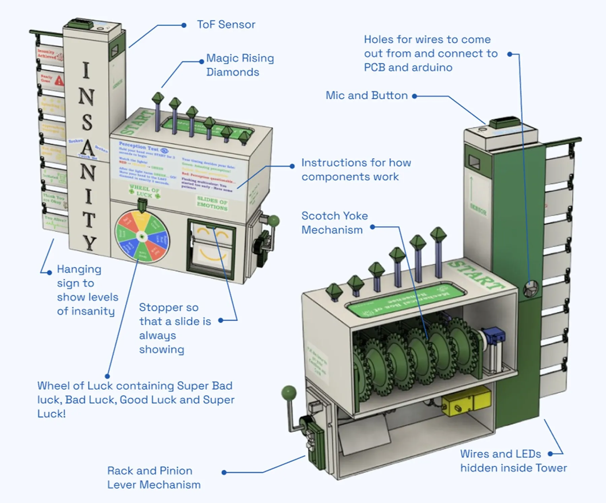
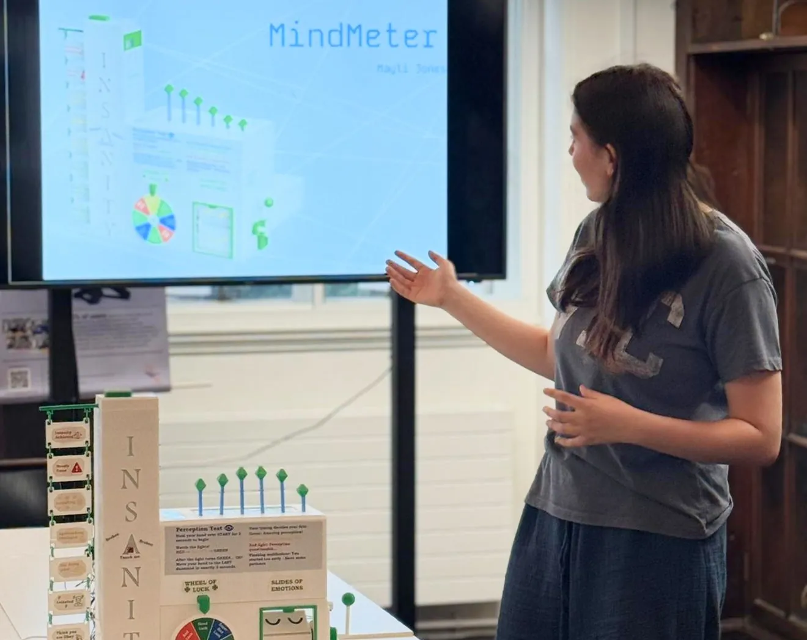
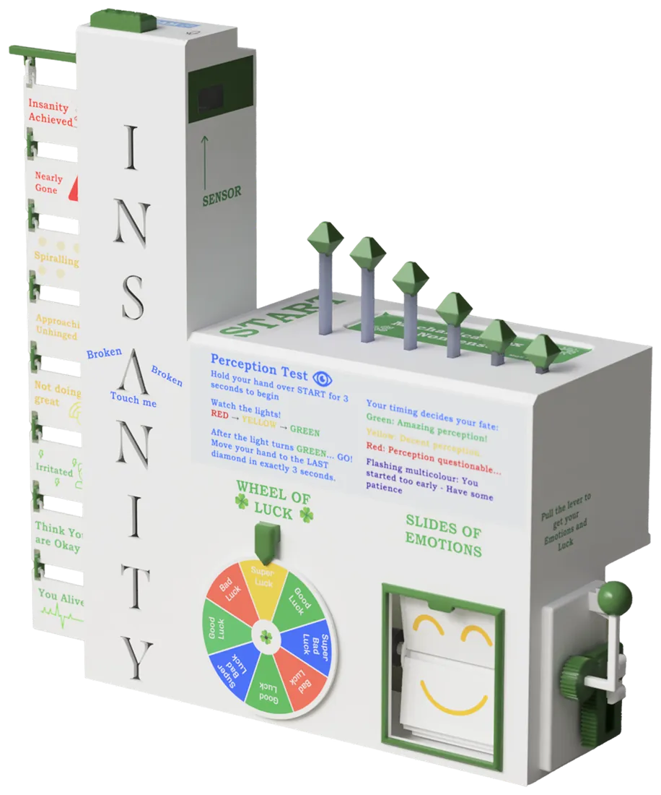
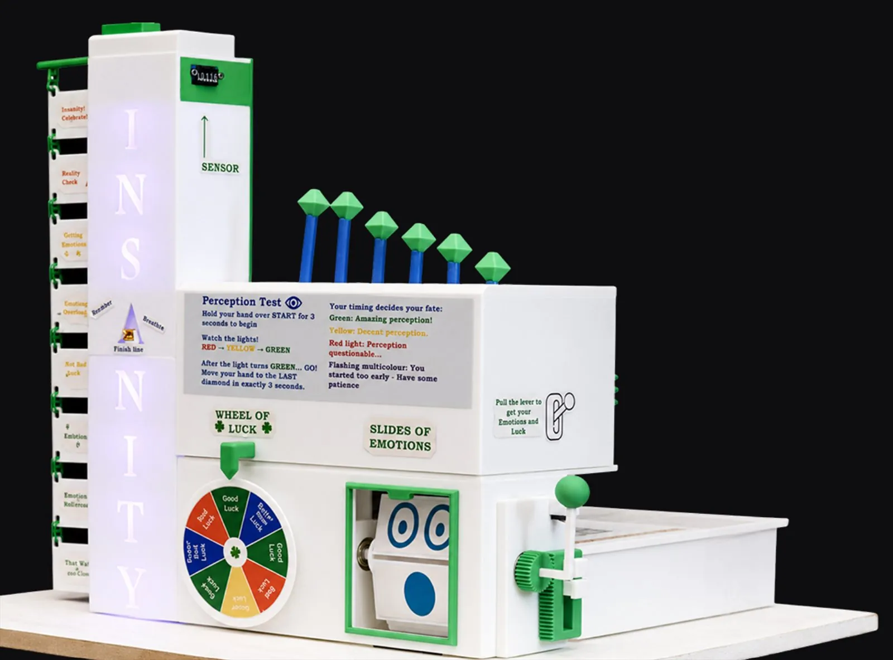

MindMeter
Measuring the Unmeasurable
Technical
CAD, Mechanical Design, Rapid Prototyping, DFA, Arduino, Electronics Integration, Soldering
Transferable
Creativity, Resourcefulness, Resilience, Teamwork, Presentation
Pair project with Aidan Ryder
The Challenge
Create an interactive mechatronic product using resourceful design, simple electronics and a range of engaging mechanical movements.
The Solution
A playful machine that measures sanity, perception, luck and emotion through sensors, lights and interactive mechanical games, creating a varied user experience.
Try it
A browser recreation of the machine, built from our design. Press the button and make some noise.
Listening...
No microphone? Hold PUSH or the Shout button for 3 seconds to send it haywire.
Press or hold PUSH and make some noise; reach the top and the whole machine goes haywire. Pull the lever to spin the Wheel of Luck and the Slides of Emotion, and move your mouse (or drag a finger) over the green crystals to make them follow you. Hover over the A (tap it on a phone) to stop it flickering.
Your microphone is only used while the button is active. Nothing is recorded or sent anywhere.
Browser version built by me; the physical machine was a pair project with Aidan Ryder.
Development Journey
MindMeter measures four invented stats, Sanity, Perception, Luck and Emotion, each inspired by a different reference: a carnival strength-test game, a crankshaft-driven piston row, and a slot machine. We stayed deliberately resourceful throughout: the only components bought beyond the supplied kit were bearings and a ToF sensor, four LED colours were combined to produce seven output colours instead of buying an LED strip, and every sticker and sign was designed, printed and cut by hand.
Final Design


Sound-Responsive Tower
A push button activates the microphone, which measures sound level and changes the LEDs from green to red.
Hand-Tracking Pistons
A ToF sensor measures hand distance, letting the crystal-topped pistons follow the user in a wave-like motion.
Scotch-Yoke Mechanism
One servo drives six pistons through a shared Scotch-Yoke and gear system.
Capacitive Touch Input
Touching the sensor stops the flickering light.
Luck and Emotion Mechanism
Bevel gears transfer rotation through supported shafts and bearings, letting one motor drive both the Wheel of Luck and the flip-clock-style emotion display.
Rack-and-Pinion Lever
The side lever drives a rack-and-pinion mechanism, triggering the Wheel of Luck and Slides of Emotion.
My Role
- Developed the full CAD model and mechanical systems
- 3D printed, finished and assembled the prototype
- Integrated electronics through soldering and wiring
- Presented and demonstrated the working machine to visitors
MindMeter was a pair project, designed and built with Aidan Ryder (LinkedIn, opens in a new tab).



